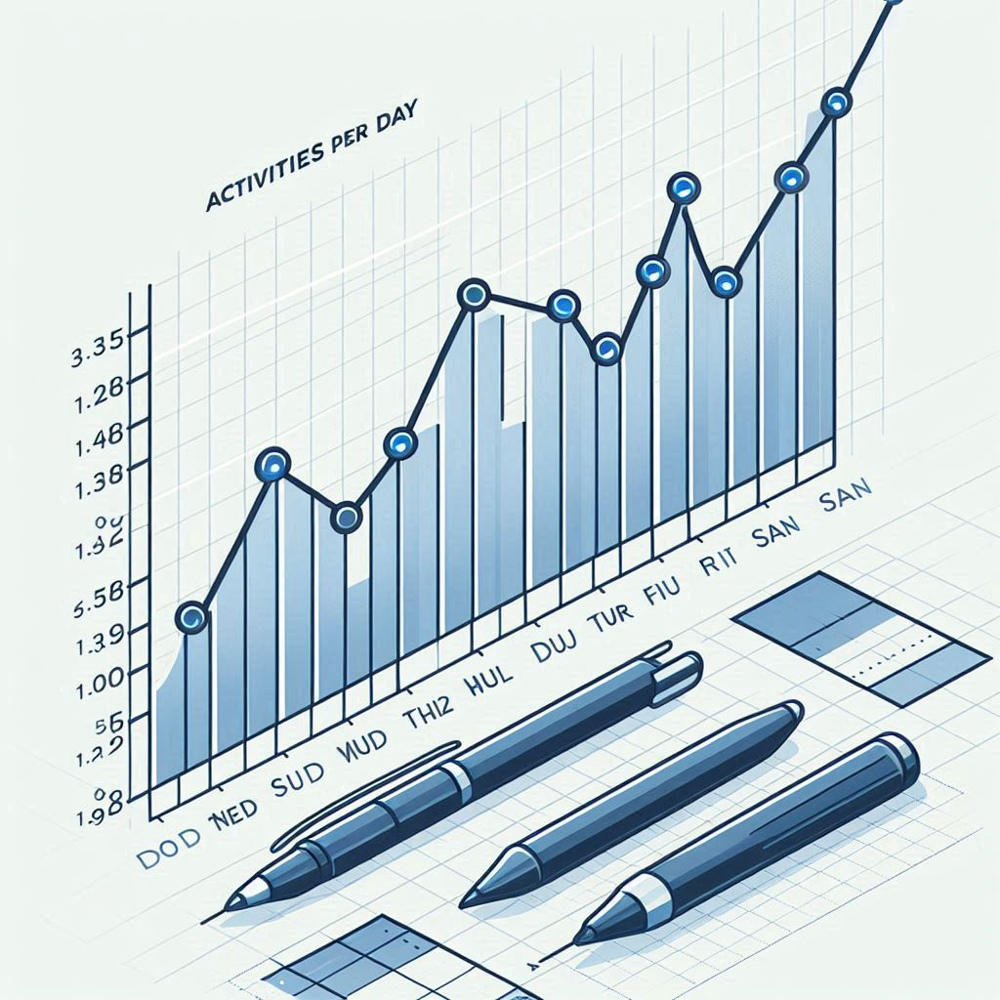
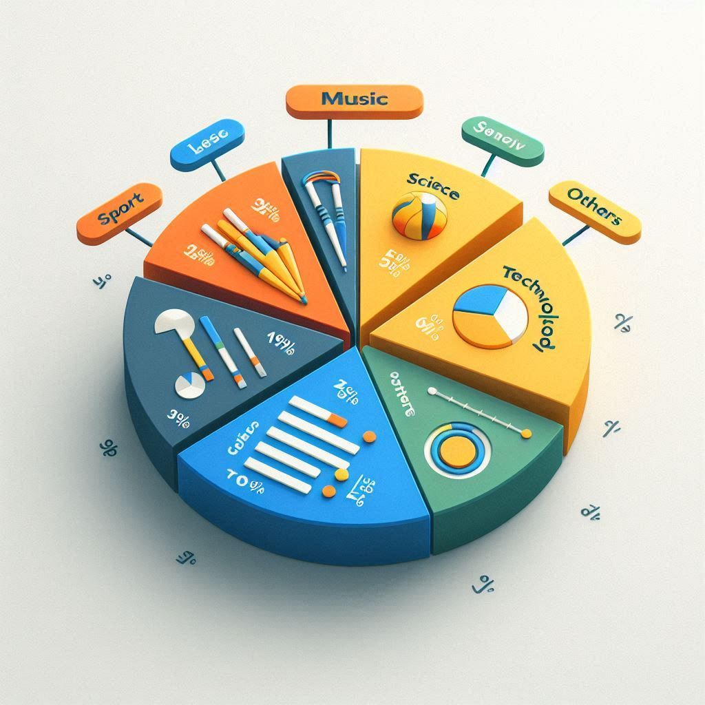
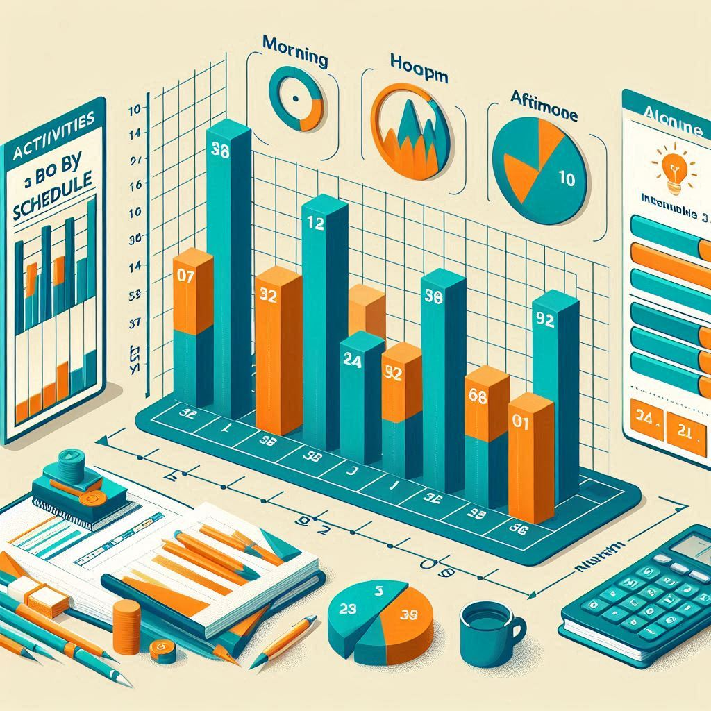

Este gráfico muestra la cantidad de actividades programadas por cada día de la semana.

Este gráfico muestra la proporción de actividades según su tema.

Este gráfico compara la cantidad de actividades programadas en horarios de mañana, mediodía y tarde en los últimos meses.